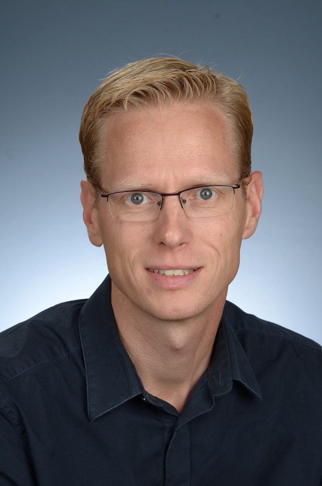
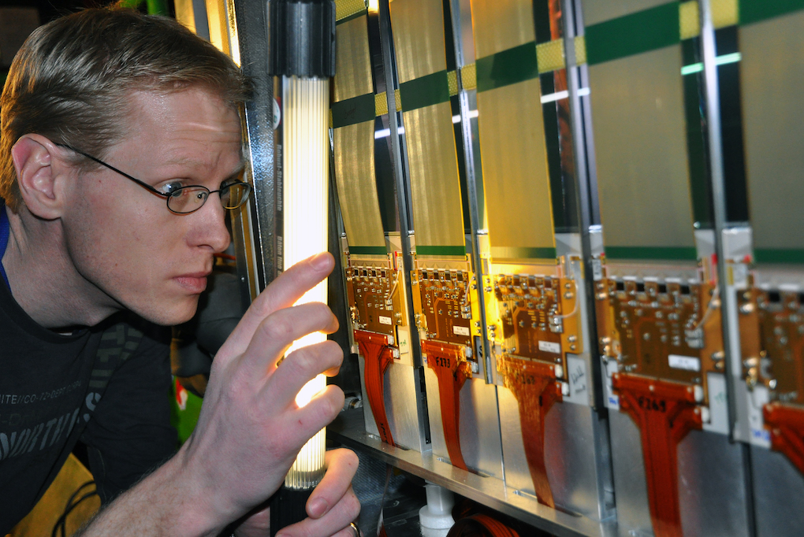

Over
Na mijn studie natuurkunde in Utrecht heb ik een promotie gedaan in de deeltjesfysica bij het Nikhef in Amsterdam. Mijn onderzoek vond plaats bij het CERN in Genève en na mijn promotie besloot ik om daar verder te gaan als postdoc. In die tijd woonde en werkte ik in Genève. Ik heb daar onderzoek gedaan naar de minieme verschillen tussen materie en antimaterie. In 2013 ben ik weer naar Nederland teruggekomen dankzij een VIDI beurs. Lees de samenvatting van mijn onderzoek in het Engels. Toen deze beurs afliep heb ik besloten het roer om te gooien en de overstap te maken van het onderzoek naar het onderwijs. Sinds 2019 werk ik als docent natuurkunde op het Goois Lyceum in Bussum. In mijn vrije tijd bouw ik onder andere webapps en maak ik zelf wijn.
